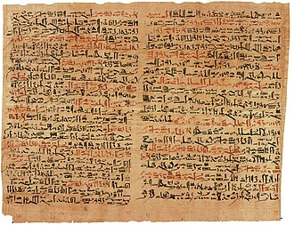
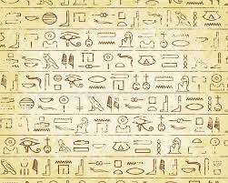
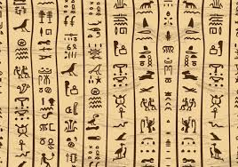

Limba
Scrierea hieroglifică datează din 3000 î.en., și este compusă din sute de simboluri. O hieroglifă poate reprezenta un cuvânt, un sunet, sau un determinant tăcut, și același simbol poate servi unor scopuri diferite, în contexte diferite. Hieroglife au fost scrise pe monumente de piatră și în morminte, care pot reprezenta lucrări individuale de artă. În scrierea de zi cu zi, scribii au folosit o formă cursivă de scriere, numită hieratică, care a fost mai rapidă și mai ușoară. În timp ce hieroglifele oficiale pot fi citite în rânduri sau coloane, în orice direcție (deși de obicei scrise de la dreapta la stânga), hieratica a fost întotdeauna scrisă de la dreapta la stânga, de obicei, în rânduri orizontale. O nouă formă de scriere, demotica, a devenit stilul de scris predominant.
În jurul primului secol e.n., alfabetul copt a început să fie utilizat în paralel cu scrierea demotică. Copta este un alfabet grecesc modificat cu adaos de unele semne demotice. Deși hieroglifele oficiale au fost utilizate într-un rol ceremonial până în secolul al IV-lea, spre finalul antichității, doar un mic grup de preoți puteau să le citească și să le interpreteze. Când unitățile religioase tradiționale au fost desființate, cunoștințele de scrierea hieroglifică au fost în mare parte pierdute. Încercările de a le descifra s-au întâlnit în timpul perioadei bizantine și islamice în Egipt, dar numai în 1822, după descoperirea Pietrei de la Rosetta și ani de cercetare făcute de Thomas Young și Jean-François Champollion, hieroglifele au fost aproape complet descifrate.
Scrierea a apărut pentru prima dată în asociere cu regalitatea. Aceasta a fost în primul rând o ocupație a scribilor, care au lucrat în afara instituției Per Ankh sau Casa vieții. Acestea din urmă (numită Casa Cartii) cuprinse birouri, biblioteci, laboratoare si observatoare. Unele dintre cele mai cunoscute piese ale literaturii antice egiptene, cum ar fi textele de pe piramide și sarcofage, au fost scrise în egipteana clasică, care a continuat să fie limba de scriere până în aproximativ 1300 î.en. Mai târziu, egipteana a fost vorbită din Regatul Nou și era reprezentată în documentele administrative Ramesside, prin poezii de dragoste și povești, precum și în textele demotice și copte. În această perioadă, tradiția de scriere a evoluat în autobiografia persoanelor decedate prin textele scrise în morminte, cum ar fi cele ale lui Harkhuf și Weni. Genul cunoscut sub numele de Sebayt ("instrucțiuni") a fost dezvoltat pentru a comunica învățături de orientare de la nobilii celebri, ca Papirusul lui Ipuwer , un poem de lamentări ce descriu dezastrele naturale și revolte sociale. Povestea lui Sinuhe, scrisă în Regatul Mijlociu , ar putea fi o operă a literaturii clasice egiptene. De asemenea, Papirusul lui Westcar cuprinde un set de poveștile spuse lui Khufu de către fiii săi cu privire la minunile realizate de preoți. Instrucțiunile lui Amenemope este considerată o capodoperă a literaturii orientale. Spre sfârșitul Noului Regat, limba vernaculară a fost mai des folosită pentru a scrie piese populare, cum ar fi Povestea lui Wenamun și Instrucțiuni de orice, care relatează povestea unui nobil, care este jefuit pe drum pentru a cumpăra cedru din Liban și luptă să se întoarcă în Egipt. Din anii 700 î.en., poveștile narative și instrucțiunile, cum ar fi Instrucțiunile de Onchsheshonqy, precum și documente personale și de afaceri au fost scrise în demotică. Multe povestiri scrise în demotică în timpul perioadei greco-romane au fost preluate din epocile istorice anterioare, când Egiptul a fost o națiune independentă condusă de faraoni mari, cum ar fi Ramses al II-lea.